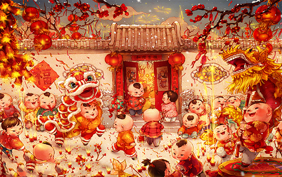

扫尘
"二十四，扫房子"，据《吕氏春秋》记载，我国在尧舜时代就有春节扫尘的风俗。按民间的说法：因"尘"与"陈"谐音，新春扫尘有"除陈布新"的含义，其用意是要把一切穷运、晦气统统扫出门。这一习俗寄托着人们破旧立新的愿望和辞旧迎新的祈求。
守岁
除夕守岁是最重要的年俗活动之一，守岁之俗由来已久。最早记载见于西晋周处的《风土志》：除夕之夜，各相与赠送，称为"馈岁"；酒食相邀，称为"别岁"；长幼聚饮，祝颂完备，称为"分岁"；大家终夜不眠，以待天明，称曰"守岁"。自汉代以来，新旧年交替的时刻一般为夜半时分。
拜年
春节拜年时，晚辈要先给长辈拜年，祝长辈长寿安康，长辈可将事先准备好的压岁钱分给晚辈，据说压岁钱可以压住邪祟，因为"岁"与"祟"谐音，晚辈得到压岁钱就可以平平安安度过一岁。压岁钱有两种，一种是以彩绳穿线编作龙形，置于床脚，此记载见于《燕京岁时记》；另一种是最常见的，即由家长用红纸包裹分给孩子的钱。现在长辈为晚辈分送压岁钱的习俗仍然盛行。
贴春联
春联也叫门对、春贴、对联、对子、桃符等，它以工整、对偶、简洁、精巧的文字描绘时代背景，抒发美好愿望，是我国特有的文学形式。每逢春节，无论城市还是农村，家家户户都要精选一幅大红春联贴于门上，为节日增加喜庆气氛。
年画
春节挂贴年画在城乡也很普遍，浓墨重彩的年画给千家万户平添了许多兴旺欢乐的喜庆气氛。年画是我国的一种古老的民间艺术，反映了人民朴素的风俗和信仰，寄托着他们对未来的希望。年画，也和春联一样，起源于"门神"。
放爆竹
中国民间有"开门爆竹"一说。即在新的一年到来之际，家家户户开门的第一件事就是燃放爆竹，以哔哔叭叭的爆竹声除旧迎新。爆竹是中国特产，亦称"爆仗"、"炮仗"、"鞭炮"。其起源很早，至今已有两千多年的历史。放爆竹可以创造出喜庆热闹的气氛，是节日的一种娱乐活动，可以给人们带来欢愉和吉利。
祭祖
新年为岁首，第一件事就是祭祀祖先。这一礼仪，有的地方称之为"拜家堂"，因为祖宗是称为"家亲"而不是称为神的。
民俗专家表示，新年祭祖的意义是慎终追远、礼敬祖先及祈求祖先保佑子孙后代繁荣昌盛，诸事顺意，表现了中华民族传统的伦理思想。
接财神
旧时从春节子夜开财门起，就有送财神的，手拿着一张纸印的财神在门外嚷着：“送财神爷的来啦！”这时屋里的主人为表示欢迎财神降临，便拿赏钱给来人。送财神的口中要说些吉利话，如“金银财宝滚进来啦！”“左边有对金狮子，右边有对金凤凰”之类的口彩。
岁时节日，亦被称为"传统节日"。它们历史悠久、流传面广，具有极大的普及性、群众性、甚至全民性的特点。
年节是除旧布新的日子。年节虽定在农历正月初一，但年节的活动却并不止于正月初一这一天。从腊月二十三（或二十四日）小年节起，人们便开始"忙年"：扫房屋、洗头沐浴、准备年节器具等等。所有这些活动，有一个共同的主题，即"辞旧迎新"。人们以盛大的仪式和热情，迎接新年，迎接春天。
年节也是祭祝祈年的日子。古人谓谷子一熟为一"年"，五谷丰收为"大有年"。西周初年，即已出现了一年一度的庆祝丰收的活动。后来，祭天祈年成了年俗的主要内容之一。而且，诸如灶神、门神、财神、喜神、井神等诸路神明，在年节期间，都备享人间香火。人们借此酬谢诸神过去的关照，并祈愿在新的一年中能得到更多的福佑。年节还是合家团圆、敦亲祀祖的日子。除夕，全家欢聚一堂，吃罢"团年饭"，长辈给孩子们分发"压岁钱"，一家人团坐"守岁"。
天增岁月人增寿，春满人间福满门
爆竹一声除旧，桃符万象更新
一夜连双岁，三更分两年
冬天麦盖三层被，来年枕着馒头睡
喜居宝地千年旺，福照家门万事兴